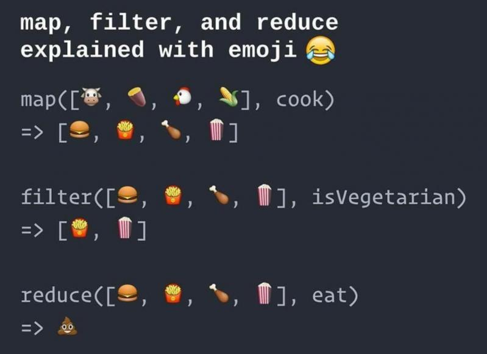

00. Link - Write Your Own Node.js Promise Library from Scratch
01. Link - How to escape async/await hell
02. Link - Abusing Proxies for DSLs
03. Link - Using async iteration natively in Node.js
04. Link - Node.js Bug Bounty
05. Link - Node.js can HTTP/2 push!
06. Link - Implementing SOLID and the onion architecture in Node.js with TypeScript and InversifyJS
07. Link - Simplify your functions adding “hooks” to your Promises
08. Link - A node asynchronous process and package monitor
09. Link - Chrome and Firefox will support a new standard for password-free logins
10. Link - How I stopped worrying and learned to love the JavaScript ecosystem
11. Link - Understanding TypeScript’s type notation
12. Link - Abhinav Rastogi: Scaling NodeJS beyond the ordinary | JSConf Iceland 2018
